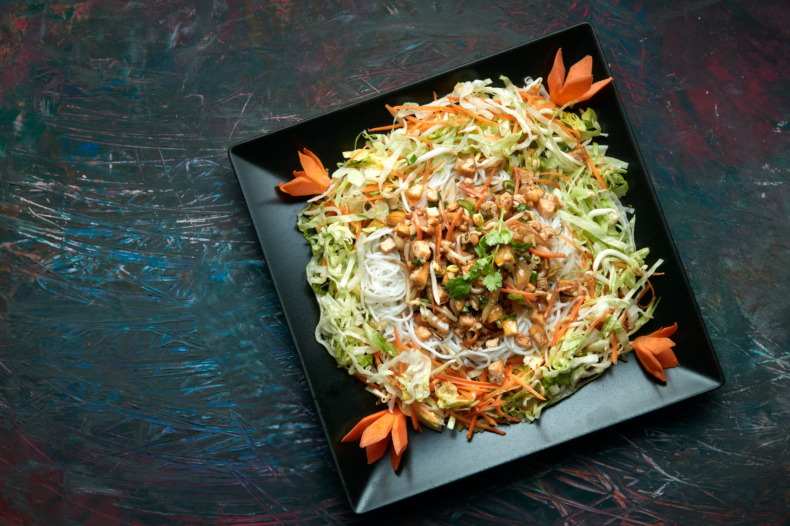

Vietnamese Rice Noodle Salad
For the marinated chicken:
In a medium bowl, combine 4 chicken thighs with all the marinade ingredients (garlic, lime juice, fish sauce, soy sauce, brown sugar, and vegetable oil), and set aside for 30 mins to an hour while you prepare the other salad ingredients.
For the nuoc cham:
In another bowl, combine fish sauce, lime juice, vinegar, garlic, sugar, chilli. Stir until the sugar is completely disolved. nuoc cham is your side sauce for this dish.
For the noodles:
Boil the rice noodles according to the package instructions. Then drain and rinse under cold water.
Cooking the chicken:
Heat vegetable oïl in a pan or skillet over a medium-high heat. Sear the chicken for about 4 minutes per side, or until cooked through.
Assembly:
To assemble the salad, combine the rice noodles with bean sprouts, julienned carrots and cucumber, romaine lettuce, mint, and cilantro. Then finely slice the chicken thighs and add these to the salad. Serve with your nouc cham sauce.
Ingredients (19):
- 4 Chicken Thighs, boneless & skinless
- 2 cups of Bean Sprouts
- 1 large Carrot
- 1 sprig of Corriander
- 5 Garlic cloves
- 2 Limes
- 1 sprig of Mint
- 1 red Chili
- 6 Romaine lettuce leaves
- 1 Seedless Cucumber
- 6 tbsp of Fish Sauce
- 1 tbsp of Soy Sauce
- 200g of Vermicelli Noodles
- 2 tbsp of Brown Sugar
- 3 tbsp of Sugar
- 2 tbsp of Rice or White Vinegar
- Vegetable oïl
- 1/2 cup of Water